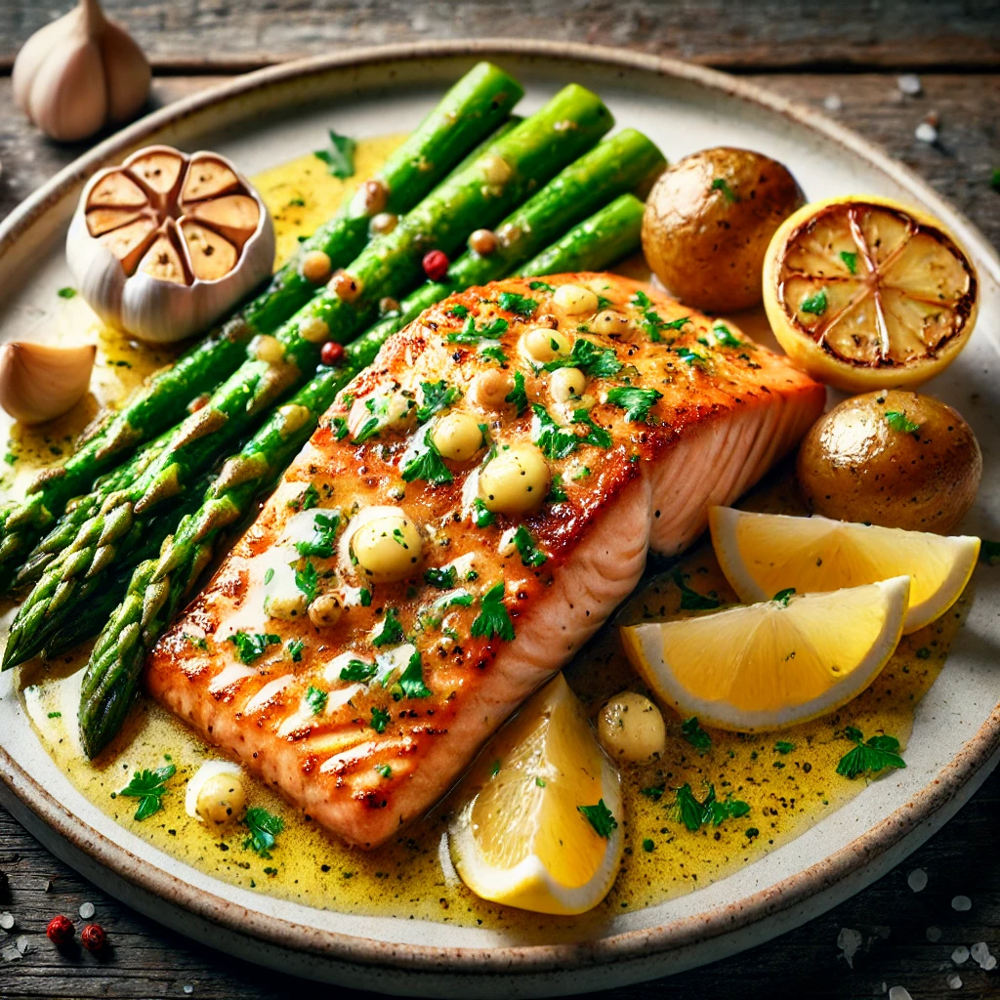

Garlic Butter Salmon Recipe

Description
This Garlic Butter Salmon is a delicious and simple dish that pairs tender, flaky salmon with a rich, flavorful garlic butter sauce. A touch of lemon adds brightness, making it a perfect meal for any occasion.
Ingredients
- 4 salmon fillets (about 6 oz each, skin-on or skinless)
- 2 tablespoons olive oil
- 3 tablespoons unsalted butter
- 4 garlic cloves, minced
- Juice of 1 lemon (plus lemon slices for garnish)
- 1 teaspoon paprika
- 1 teaspoon dried oregano (or Italian seasoning)
- 1/2 teaspoon salt (adjust to taste)
- 1/4 teaspoon black pepper
- Fresh parsley, chopped (for garnish)
Optional Side Suggestions:
- Steamed asparagus or green beans
- Roasted potatoes or rice
Instructions
-
Prep the Salmon: Pat the salmon fillets dry with a paper towel. Season with paprika, salt, and pepper on both sides.
-
Cook the Salmon:
- Heat olive oil in a large non-stick skillet over medium-high heat.
- Add salmon fillets to the skillet, skin-side down if using skin-on.
- Cook for about 4 minutes on the first side until the salmon is golden brown and easily releases from the pan.
- Flip the salmon and cook for another 3-4 minutes or until the salmon is just cooked through. Remove the salmon and set aside.
-
Make the Garlic Butter Sauce:
- Reduce heat to medium.
- Add butter to the skillet. Once melted, stir in the minced garlic and cook for about 1 minute, until fragrant.
- Squeeze in the juice of one lemon and sprinkle in the oregano (or Italian seasoning). Stir to combine.
-
Combine and Garnish: Return the salmon fillets to the skillet, spooning the garlic butter sauce over them. Let the salmon warm up for a minute or two in the sauce. Garnish with chopped parsley and lemon slices.
-
Serve: Plate the salmon and drizzle extra sauce over the top. Pair with your favorite sides like steamed veggies, roasted potatoes, or a fresh salad.